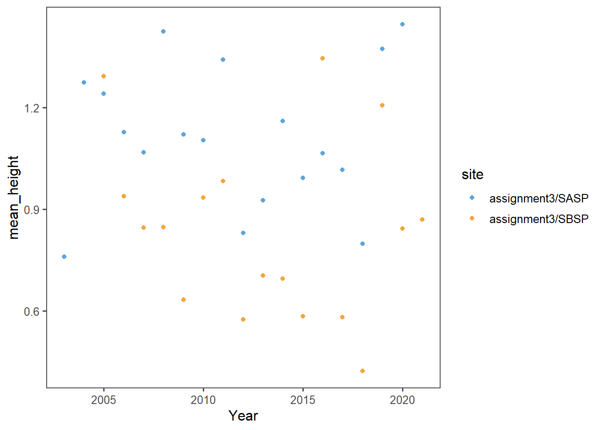
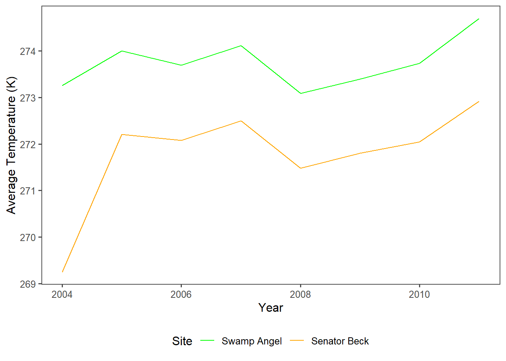
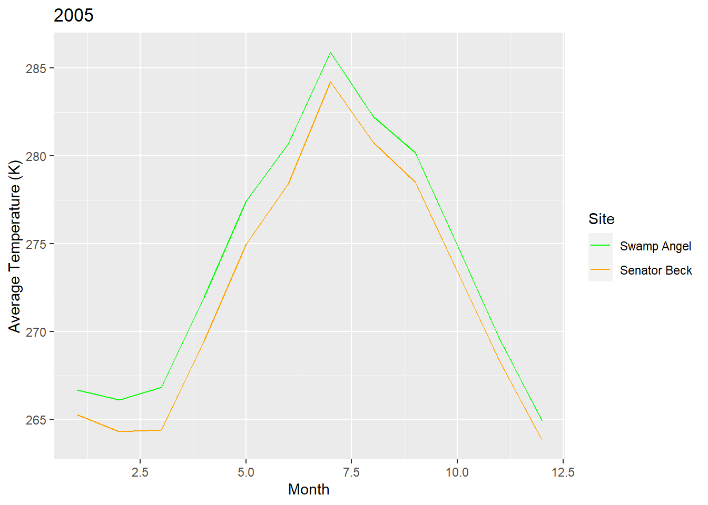
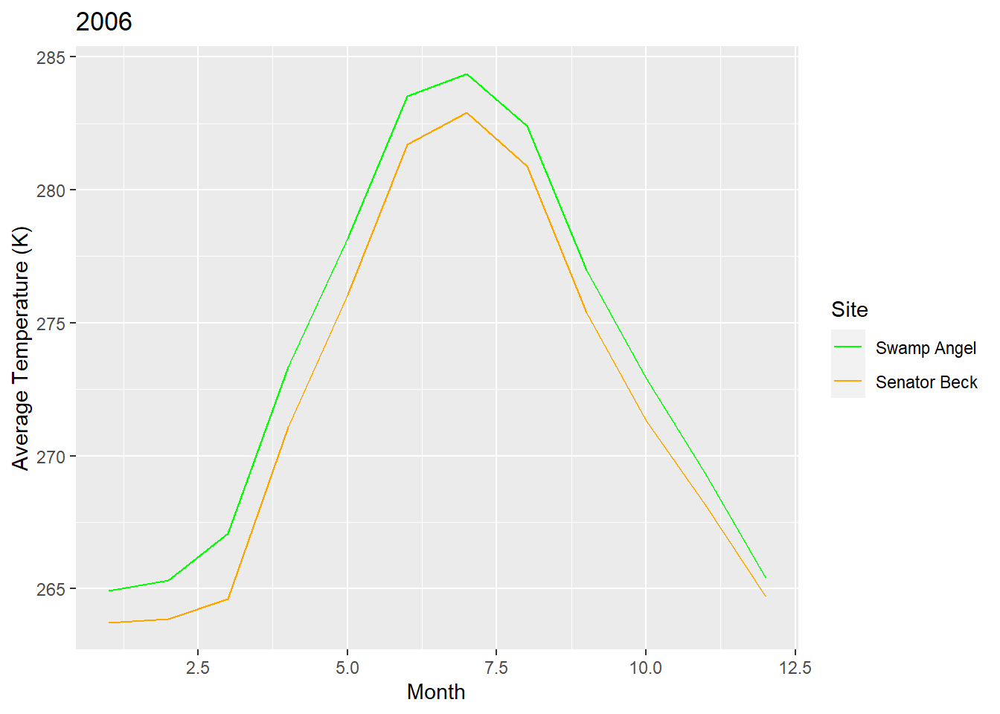
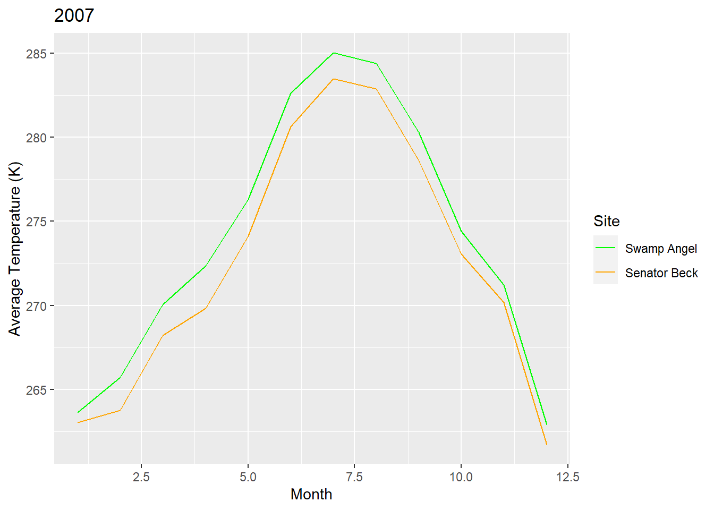
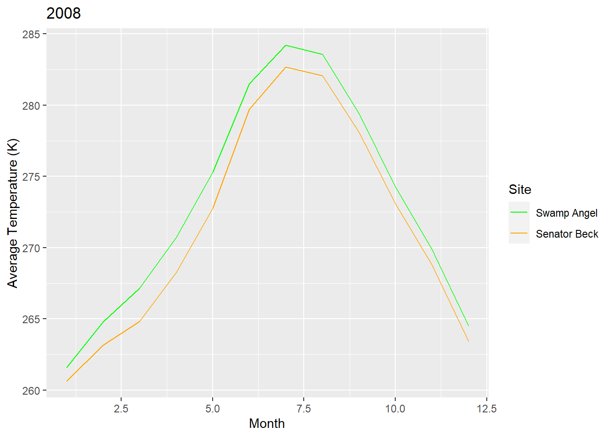
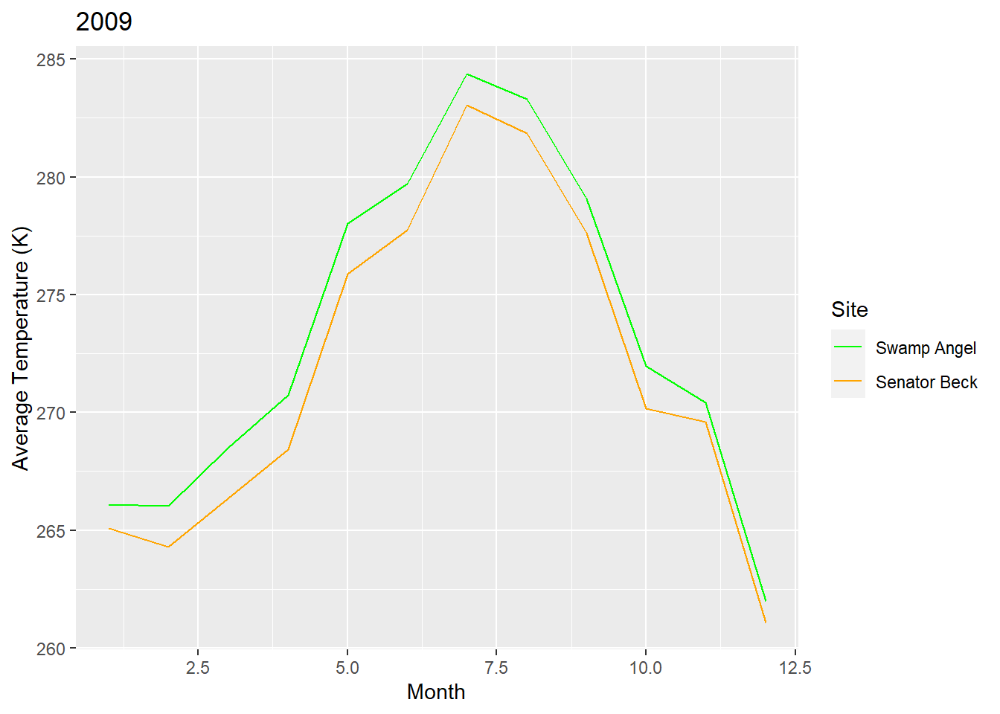
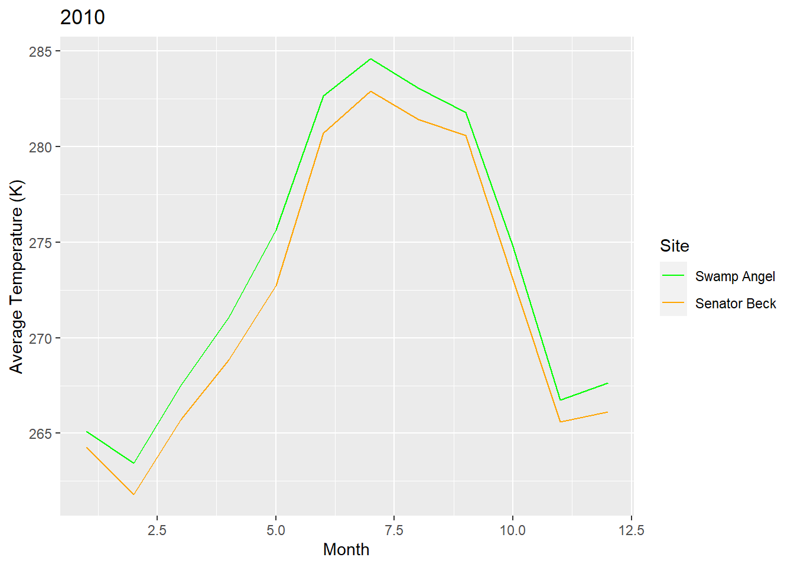

Chapter 4 Snow Data Assignment
4.1 Simple web scraping
R can read html using either rvest, xml, or xml2 packages. Here we are going to navigate to the Center for Snow and Avalance Studies Website and read a table in. This table contains links to data we want to programatically download for three sites. We don’t know much about these sites, but they contain incredibly rich snow, temperature, and precip data.
4.2 Reading an html
4.2.1 Extract CSV links from webpage
site_url <- 'https://snowstudies.org/archived-data/'
#Read the web url
webpage <- read_html(site_url)
#See if we can extract tables and get the data that way
tables <- webpage %>%
html_nodes('table') %>%
magrittr::extract2(3) %>%
html_table(fill = TRUE)
#That didn't work, so let's try a different approach
#Extract only weblinks and then the URLs!
links <- webpage %>%
html_nodes('a') %>%
.[grepl('24hr',.)] %>%
html_attr('href')4.3 Data Download
4.3.1 Download data in a for loop
#Grab only the name of the file by splitting out on forward slashes
splits <- str_split_fixed(links,'/',8)
#Keep only the 8th column
dataset <- splits[,8]
#generate a file list for where the data goes
file_names <- paste0('data/assignment3/',dataset)
for(i in 1:3){
download.file(links[i],destfile=file_names[i])
}
downloaded <- file.exists(file_names)
evaluate <- !all(downloaded)4.4 Data read-in
4.4.1 Read in just the snow data as a loop
#Pattern matching to only keep certain files
snow_files <- file_names %>%
.[!grepl('SG_24',.)] %>%
.[!grepl('PTSP',.)]
#empty_data <- list()
# snow_data <- for(i in 1:length(snow_files)){
# empty_data[[i]] <- read_csv(snow_files[i]) %>%
# select(Year,DOY,Sno_Height_M)
# }
#snow_data_full <- do.call('rbind',empty_data)
#summary(snow_data_full)4.4.2 Read in the data as a map function
our_snow_reader <- function(file){
name = str_split_fixed(file,'/',2)[,2] %>%
gsub('_24hr.csv','',.)
df <- read_csv(file) %>%
select(Year,DOY,Sno_Height_M) %>%
mutate(site = name)
}
snow_data_full <- map_dfr(snow_files,our_snow_reader)## Rows: 6211 Columns: 52## -- Column specification --------------------------------------------------------
## Delimiter: ","
## dbl (52): ArrayID, Year, DOY, Hour, LoAir_Min_C, LoAir_Min_Time, LoAir_Max_C...##
## i Use `spec()` to retrieve the full column specification for this data.
## i Specify the column types or set `show_col_types = FALSE` to quiet this message.## Rows: 6575 Columns: 48## -- Column specification --------------------------------------------------------
## Delimiter: ","
## dbl (48): ArrayID, Year, DOY, Hour, LoAir_Min_C, LoAir_Min_Time, LoAir_Max_C...##
## i Use `spec()` to retrieve the full column specification for this data.
## i Specify the column types or set `show_col_types = FALSE` to quiet this message.summary(snow_data_full)## Year DOY Sno_Height_M site
## Min. :2003 Min. : 1.0 Min. :-3.523 Length:12786
## 1st Qu.:2008 1st Qu.: 92.0 1st Qu.: 0.350 Class :character
## Median :2012 Median :183.0 Median : 0.978 Mode :character
## Mean :2012 Mean :183.1 Mean : 0.981
## 3rd Qu.:2016 3rd Qu.:274.0 3rd Qu.: 1.520
## Max. :2021 Max. :366.0 Max. : 2.905
## NA's :45544.4.3 Plot snow data
snow_yearly <- snow_data_full %>%
group_by(Year,site) %>%
summarize(mean_height = mean(Sno_Height_M,na.rm=T))## `summarise()` has grouped output by 'Year'. You can override using the `.groups` argument.ggplot(snow_yearly,aes(x=Year,y=mean_height,color=site)) +
geom_point() +
ggthemes::theme_few() +
ggthemes::scale_color_few()## Warning: Removed 2 rows containing missing values (geom_point).
4.5 Assignment
4.5.1 Question 1. Extract the meteorological data URLs. Here we want you to use the rvest package to get the URLs for the SASP forcing and SBSP_forcing meteorological datasets.
site_url <- 'https://snowstudies.org/archived-data/'
webpage <- read_html(site_url)
links <- webpage %>%
html_nodes('a') %>%
.[grepl('forcing',.)] %>%
html_attr('href')- Download the meteorological data. Use the
download_fileandstr_split_fixedcommands to download the data and save it in your data folder. You can use a for loop or a map function.
splits <- str_split_fixed(links,'/',8)
dataset <- splits[,8]
file_names <- paste0('data/assignment3/',dataset)
#for(i in 1:3){
#download.file(links[i],destfile=file_names[i])
#}
#downloaded <- file.exists(file_names)
#evaluate <- !all(downloaded)- Write a custom function to read in the data and append a site column to the data.
# this code grabs the variable names from the metadata pdf file
library(pdftools)## Warning: package 'pdftools' was built under R version 4.1.2headers <- pdf_text('https://snowstudies.org/wp-content/uploads/2022/02/Serially-Complete-Metadata-text08.pdf') %>%
readr::read_lines(.) %>%
trimws(.) %>%
str_split_fixed(.,'\\.',2) %>%
.[,2] %>%
.[1:26] %>%
str_trim(side = "left")
our_forcing_reader <- function(file_names){
name = str_split_fixed(file_names,'/',2)[,2]
name2 = str_split_fixed(file_names,'_',4)[,2]
df <- read.delim(file_names, header = FALSE, sep ="", col.names = headers, skip = 4) %>%
select(1:14) %>%
mutate(site = name2)
}- Use the
mapfunction to read in both meteorological files. Display a summary of your tibble.
forcing_data_full <- map_dfr(file_names,our_forcing_reader)
summary(forcing_data_full)## year month day hour minute
## Min. :2003 Min. : 1.000 Min. : 1.00 Min. : 0.00 Min. :0
## 1st Qu.:2005 1st Qu.: 3.000 1st Qu.: 8.00 1st Qu.: 5.75 1st Qu.:0
## Median :2007 Median : 6.000 Median :16.00 Median :11.50 Median :0
## Mean :2007 Mean : 6.472 Mean :15.76 Mean :11.50 Mean :0
## 3rd Qu.:2009 3rd Qu.: 9.000 3rd Qu.:23.00 3rd Qu.:17.25 3rd Qu.:0
## Max. :2011 Max. :12.000 Max. :31.00 Max. :23.00 Max. :0
## second precip..kg.m.2.s.1. sw.down..W.m.2. lw.down..W.m.2.
## Min. :0 Min. :0.000e+00 Min. :-9999.000 Min. :-9999.0
## 1st Qu.:0 1st Qu.:0.000e+00 1st Qu.: -3.510 1st Qu.: 173.4
## Median :0 Median :0.000e+00 Median : -0.344 Median : 231.4
## Mean :0 Mean :3.838e-05 Mean :-1351.008 Mean :-1325.7
## 3rd Qu.:0 3rd Qu.:0.000e+00 3rd Qu.: 294.900 3rd Qu.: 272.2
## Max. :0 Max. :6.111e-03 Max. : 1341.000 Max. : 365.8
## air.temp..K. windspeed..m.s.1. relative.humidity.... pressure..Pa.
## Min. :242.1 Min. :-9999.000 Min. : 0.011 Min. :63931
## 1st Qu.:265.8 1st Qu.: 0.852 1st Qu.: 37.580 1st Qu.:63931
## Median :272.6 Median : 1.548 Median : 59.910 Median :65397
## Mean :272.6 Mean : -790.054 Mean : 58.891 Mean :65397
## 3rd Qu.:279.7 3rd Qu.: 3.087 3rd Qu.: 81.600 3rd Qu.:66863
## Max. :295.8 Max. : 317.300 Max. :324.800 Max. :66863
## specific.humidity..g.g.1. site
## Min. :0.000000 Length:138336
## 1st Qu.:0.001744 Class :character
## Median :0.002838 Mode :character
## Mean :0.003372
## 3rd Qu.:0.004508
## Max. :0.014780- Make a line plot of mean temp by year by site (using the
air temp [K]variable). Is there anything suspicious in the plot? Adjust your filtering if needed.
The year 2003 had lower average temperatures compared to the following years which could be attributed to missing data resulting in lower averages. I decided to filter out this year so it was mroe representative.
temp_yearly <- forcing_data_full %>%
filter(year > 2003) %>%
group_by(year,site) %>%
summarize(mean_temp = mean(air.temp..K.,na.rm=T))
ggplot(temp_yearly,aes(x=year,y=mean_temp,color=site)) +
geom_line() +
ggthemes::theme_few() +
ggthemes::scale_color_few() +
labs(x="Year",
y="Average Temperature (K)",
caption="Figure 1. A time series of average monthly temperatures (K) at the Swamp Angel Study Plot and the Senator Beck Study Plot.",
color = "Site") +
scale_color_manual(labels = c("Swamp Angel", "Senator Beck"), values = c("green", "orange")) +
theme(legend.position = "bottom")
- Write a function that makes line plots of monthly average temperature at each site for a given year. Use a for loop to make these plots for 2005 to 2010. Are monthly average temperatures at the Senator Beck Study Plot ever warmer than the Swamp Angel Study Plot? Hint: https://ggplot2.tidyverse.org/reference/print.ggplot.html
From the plots, it appears that the Senator Beck Study Plot is never warmer than the Swamp Angel Study Plot. The largest differences are during the summer months and the smallest occurring during the fall months.
lineplotter <- function(forcing_data_full,year){
temp_monthly <- forcing_data_full %>%
group_by(month, year, site) %>%
summarize(mean_temp = mean(air.temp..K.)) %>%
filter (yr == year)
plots <- ggplot(temp_monthly, aes (x = month, y = mean_temp, color = site)) +
geom_line()+
labs(x= "Month",
y = "Average Temperature (K)",
title = temp_monthly$year,
color = "Site") +
scale_color_manual(labels = c("Swamp Angel", "Senator Beck"), values = c("green", "orange"))
print(plots)
}
years <- c(2005, 2006, 2007, 2008, 2009, 2010)
for (yr in years){
lineplotter(forcing_data_full, year)
}